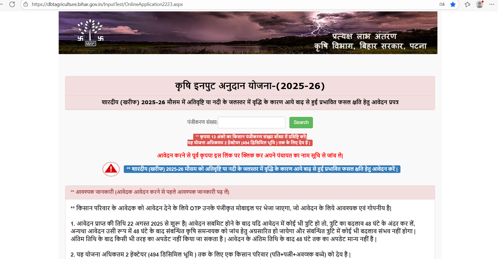
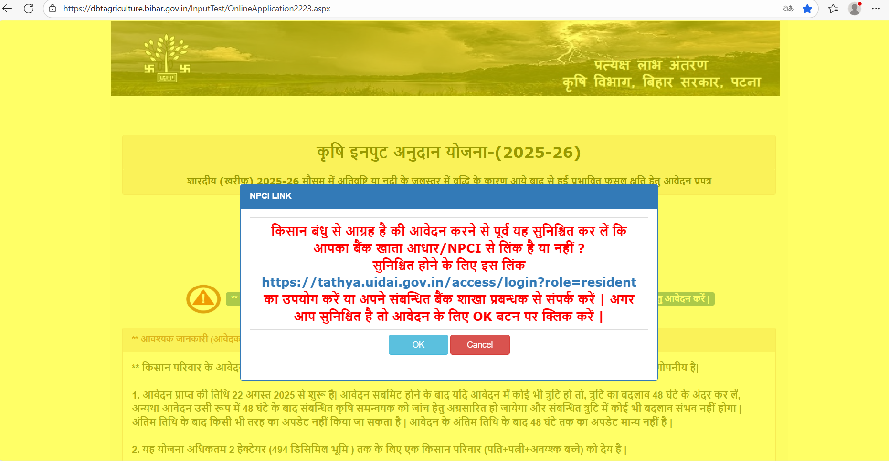
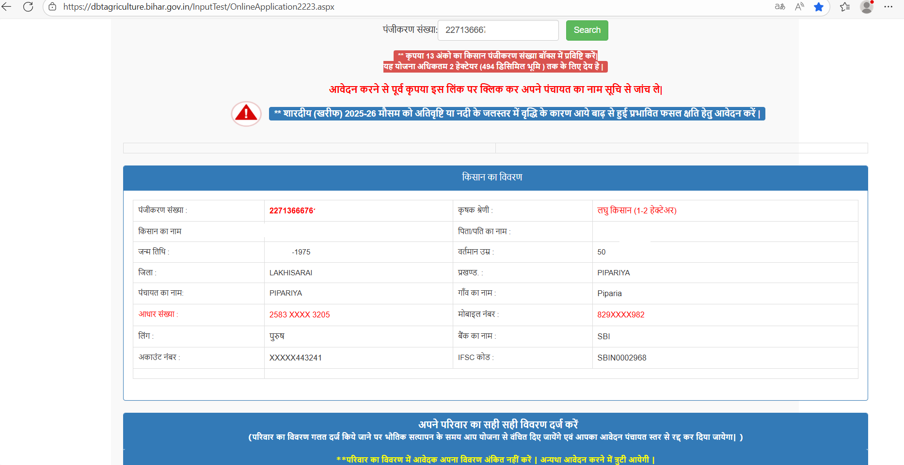
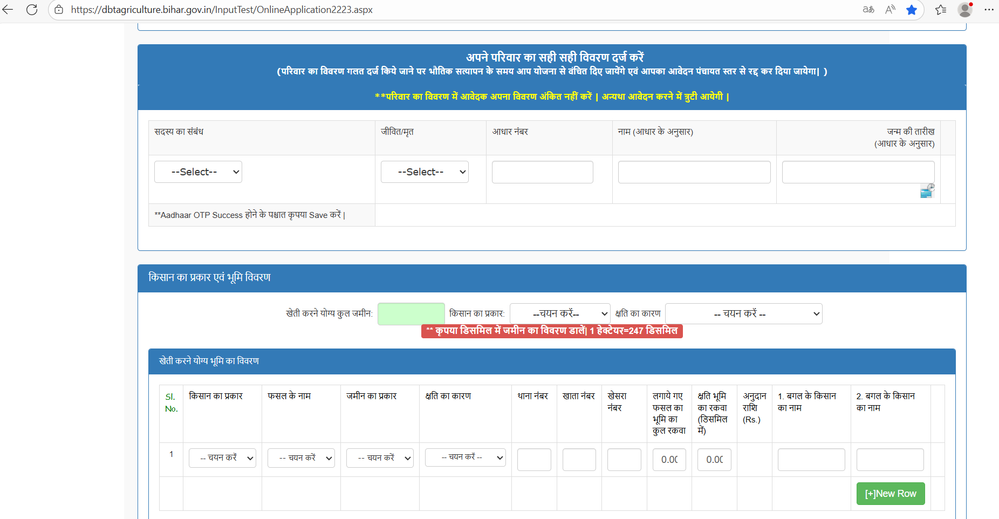
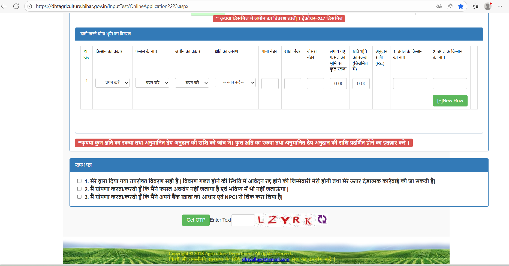
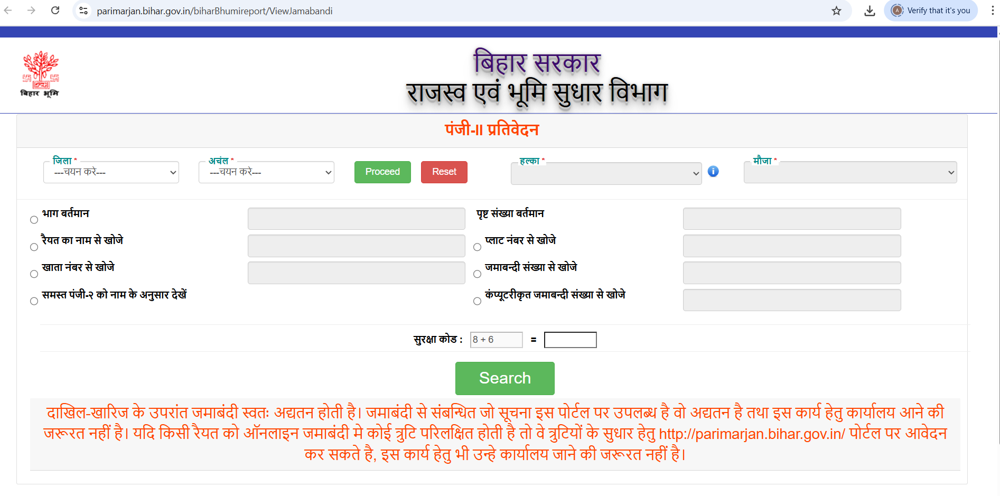
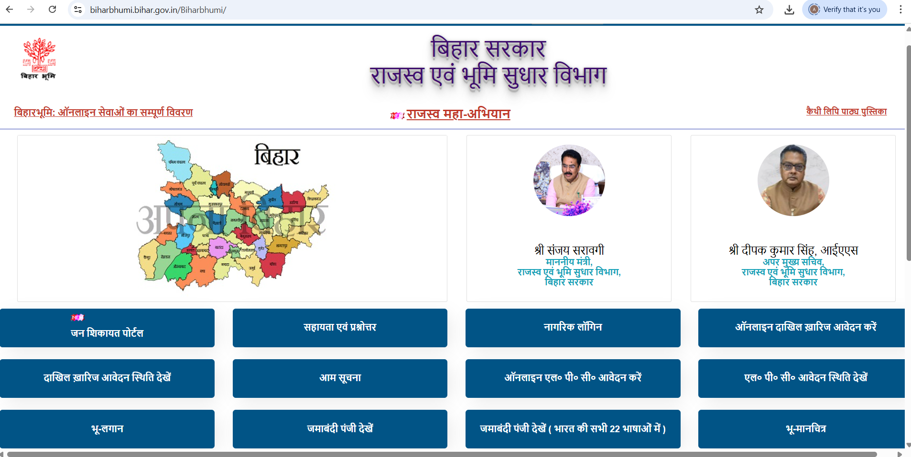
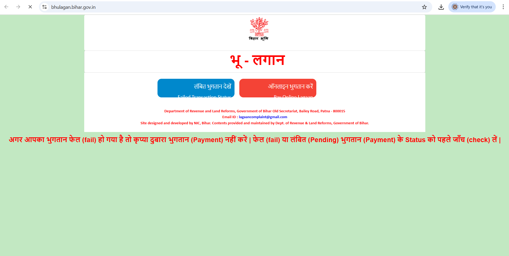
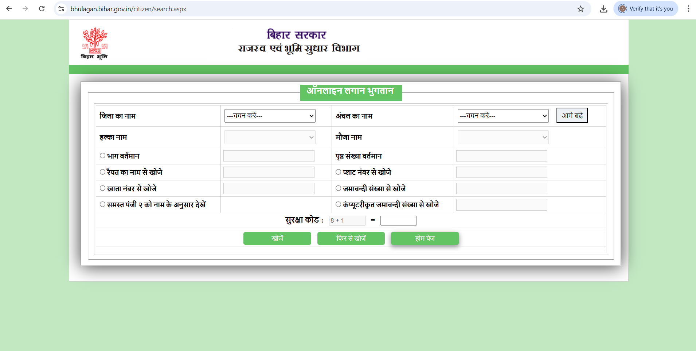
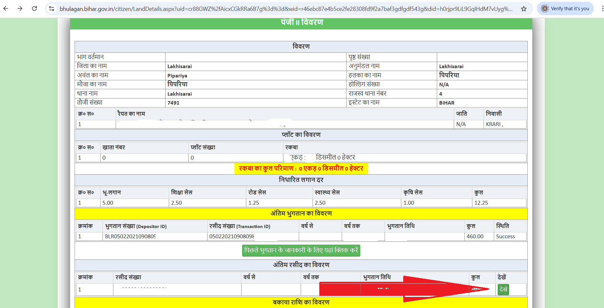

कृषि इनपुट अनुदान 2025-26
बिहार सरकार ने खरीफ 2025-26 के लिए कृषि इनपुट अनुदान योजना शुरू की है। यह योजना उन किसानों के लिए है जिनकी फसलें बाढ़ या अतिवृष्टि से प्रभावित हुई हैं। प्रभावित किसानों को सीधे DBT के माध्यम से अनुदान राशि उनके बैंक खाते में भेजा जाएगा।
- आवेदन की प्रारंभिक तिथि: 22 अगस्त 2025
- आवेदन की अंतिम तिथि: 5 सितंबर 2025
- आवेदन का माध्यम: ऑनलाइन आवेदन
पात्रता और अनुदान राशि
- पात्र किसान: खरीफ 2025 की फसलें बाढ़ या अतिवृष्टि से प्रभावित
- पंजीकरण: DBT पोर्टल पर 13 अंकों का पंजीकरण संख्या
- अनुदान राशि:
- असिंचित फसल: ₹8,500 प्रति हेक्टेयर
- सिंचित फसल: ₹17,000 प्रति हेक्टेयर
- शाश्वत/बहुवर्षीय फसल: ₹22,500 प्रति हेक्टेयर
- अधिकतम सीमा: प्रति किसान 2 हेक्टेयर
- न्यूनतम अनुदान: असिंचित ₹1,000, सिंचित ₹2,000, शाश्वत ₹2,500
आवश्यक दस्तावेज़
- अपडेटेड (24-25) भूमि रसीद/खसरा प्रमाण
- बैंक खाता विवरण (आधार लिंक सहित)
- आधार कार्ड की प्रति
आवेदन करने के स्टेप्स
नीचे संबंधित images देखें:
    BHULAGAN / Bihar Bhumi — ऑनलाइन लगान भुगतान (स्टेप-बाय-स्टेप)
आधिकारिक वेबसाइट: biharbhumi.bihar.gov.in
आवश्यक जानकारी पहले तैयार रखें — (जिला, अंचल/हल्का, मौजा, भाग/पृष्ठ या खाता/खेसरा/प्लॉट नंबर, मोबाइल)। भुगतान के लिए UPI/Netbanking/Debit/Credit-Card तैयार रखें।
-
जो चीज़ें पहले तैयार रखें
जिले का नाम, अंचल/हल्का, मौजा, भाग-नंबर और पृष्ठ संख्या — या खाता/खेसरा विवरण।
-
आधिकारिक पोर्टल खोलें
भू-लगान पेज खोलें और “ऑनलाइन लगान भुगतान” चुनें।
-
जमीन खोजें — फॉर्म भरें
जिला/अंचल चुनकर खोजें।
- टैक्स राशि देखें और भुगतान करें 
- भुगतान पूरा करें और रसीद डाउनलोड करें 
बिहार में LPC (भू-स्वामित्व प्रमाण पत्र) के लिए आवेदन कैसे करें
LPC (Land Possession Certificate) या भू-स्वामित्व प्रमाण पत्र, बिहार में जमीन के मालिकाना हक और कब्जे को प्रमाणित करने वाला एक महत्वपूर्ण दस्तावेज है। यह विभिन्न सरकारी योजनाओं, बैंक ऋण, या जमीन से संबंधित अन्य कार्यों के लिए आवश्यक होता है।
यह गाइड आपको LPC के लिए ऑनलाइन आवेदन करने की पूरी प्रक्रिया बताएगी।
LPC आवेदन के लिए आवश्यक दस्तावेज़
आवेदन करने से पहले, सुनिश्चित करें कि आपके पास निम्नलिखित दस्तावेज़ तैयार हैं:
- जमीन का रसीद (Land Receipt): नवीनतम लगान रसीद (Current Land Tax Receipt) या पिछले कुछ वर्षों की रसीदें।
- जमीन का कागजात (Land Documents):
- जमीन का केवाला (Sale Deed) या रजिस्ट्री पेपर।
- जमीन का खतियान (Khatiyan) या जमाबंदी (Jamabandi) की कॉपी।
- पहचान प्रमाण (Identity Proof): आधार कार्ड (Aadhaar Card) या वोटर आईडी कार्ड (Voter ID Card)।
- मोबाइल नंबर (Mobile Number): एक सक्रिय मोबाइल नंबर, जो आधार से लिंक हो तो बेहतर।
- ईमेल आईडी (Email ID): (वैकल्पिक, लेकिन अनुशंसित)
LPC के लिए ऑनलाइन आवेदन करने की प्रक्रिया
बिहार में LPC के लिए आवेदन "भूमि जानकारी" पोर्टल के माध्यम से किया जाता है।
सबसे पहले, बिहार सरकार के राजस्व एवं भूमि सुधार विभाग की आधिकारिक वेबसाइट पर जाएँ: https://biharbhumi.bihar.gov.in/
वेबसाइट के होमपेज पर, आपको "ऑनलाइन LPC आवेदन करें" (Apply Online for LPC) का विकल्प मिलेगा। इस पर क्लिक करें।
एक नया पेज खुलेगा जहाँ आपको अपना जिला (District) और अंचल (Anchal) चुनना होगा। चयन करने के बाद, "प्रोसीड" (Proceed) बटन पर क्लिक करें।
अब आपको लॉगिन पेज पर रीडायरेक्ट किया जाएगा। यदि आपके पास पहले से अकाउंट नहीं है, तो "रजिस्ट्रेशन" (Registration) या "नया पंजीकरण" (New Registration) पर क्लिक करके एक नया अकाउंट बनाएँ। इसके लिए आपको अपना नाम, ईमेल आईडी, मोबाइल नंबर और एक पासवर्ड बनाना होगा। यदि आपके पास अकाउंट है, तो अपने मोबाइल नंबर/ईमेल आईडी और पासवर्ड का उपयोग करके लॉगिन करें।
लॉगिन करने के बाद, आपको "जमाबंदी पंजी देखें" (View Jamabandi Register) का विकल्प मिलेगा। इस पर क्लिक करें। यहाँ आपको अपनी जमाबंदी खोजने के लिए कुछ जानकारी दर्ज करनी होगी:
- जिला (District) और अंचल (Anchal) (जो आपने पहले चुना था, वह ऑटो-फिल हो सकता है)।
- हल्का (Halka): अपने गाँव/क्षेत्र का हल्का चुनें।
- मौजा (Mauja): अपने गाँव का नाम चुनें।
- भाग वर्तमान (Part Present) और पृष्ठ संख्या वर्तमान (Page Number Present): यह जानकारी आपकी पुरानी लगान रसीद या जमाबंदी कागजात पर मिल जाएगी।
- आप रैयत के नाम से (By Raiyat Name), खाता नंबर से (By Khata Number), खेसरा नंबर से (By Khesra Number) या जमाबंदी नंबर से (By Jamabandi Number) भी खोज सकते हैं।
सही जानकारी दर्ज करने के बाद, "सुरक्षा कोड" (Security Code) भरें और "सर्च" (Search) बटन पर क्लिक करें। आपकी जमाबंदी का विवरण स्क्रीन पर दिखाई देगा। इसे ध्यान से जाँच लें।
जमाबंदी विवरण देखने के बाद, उसी पेज पर आपको "LPC आवेदन करें" (Apply for LPC) का विकल्प मिलेगा। इस पर क्लिक करें। एक आवेदन फॉर्म खुलेगा। इसमें निम्नलिखित जानकारी भरें:
- आवेदक का नाम (Applicant's Name)
- पिता/पति का नाम (Father's/Husband's Name)
- मोबाइल नंबर (Mobile Number)
- ईमेल आईडी (Email ID) (वैकल्पिक)
- वर्तमान पता (Current Address)
- स्थायी पता (Permanent Address)
- आवेदन का कारण (Reason for Application): यहाँ स्पष्ट रूप से बताएँ कि आपको LPC क्यों चाहिए (जैसे सरकारी योजना, बैंक ऋण, आदि)।
सभी जानकारी भरने के बाद, "सुरक्षा कोड" (Security Code) भरें और "सेव एंड नेक्स्ट" (Save & Next) या "आगे बढ़ें" पर क्लिक करें।
अब आपको आवश्यक दस्तावेज़ अपलोड करने होंगे। आमतौर पर, आपको अपनी नवीनतम लगान रसीद और जमीन के कागजात (केवाला/खतियान/जमाबंदी) की स्कैन की हुई कॉपी अपलोड करनी होगी। सुनिश्चित करें कि दस्तावेज़ स्पष्ट और पठनीय हों, और निर्धारित फ़ाइल साइज़ और फॉर्मेट (जैसे PDF) में हों। दस्तावेज़ अपलोड करने के बाद, "सबमिट" (Submit) बटन पर क्लिक करें।
आवेदन सफलतापूर्वक सबमिट होने के बाद, आपको एक आवेदन संख्या (Application Number) या रसीद संख्या (Receipt Number) प्राप्त होगी। इस संख्या को सुरक्षित रूप से नोट कर लें या रसीद का प्रिंटआउट ले लें। यह आपके आवेदन की स्थिति ट्रैक करने के लिए महत्वपूर्ण है।
LPC आवेदन की स्थिति कैसे जाँचें
- बिहार भूमि पोर्टल पर वापस जाएँ।
- "LPC आवेदन स्थिति देखें" (View LPC Application Status) विकल्प पर क्लिक करें।
- अपना जिला (District), अंचल (Anchal) और आवेदन संख्या (Application Number) दर्ज करें।
- "सर्च" (Search) पर क्लिक करें।
- आपके आवेदन की वर्तमान स्थिति (जैसे लंबित, सत्यापन में, स्वीकृत, अस्वीकृत) स्क्रीन पर दिखाई देगी।
महत्वपूर्ण बातें
- सत्यापन प्रक्रिया: आपके आवेदन के बाद, राजस्व कर्मचारी (कर्मचारी) और अंचल अधिकारी (CO) द्वारा जमीन का सत्यापन किया जाएगा। इसमें कुछ समय लग सकता है।
- त्रुटि सुधार: यदि आवेदन में कोई त्रुटि पाई जाती है, तो आपको सूचित किया जा सकता है। सुनिश्चित करें कि आपका मोबाइल नंबर सक्रिय हो।
- स्वीकृति के बाद: एक बार LPC स्वीकृत हो जाने के बाद, आप इसे पोर्टल से डाउनलोड कर सकते हैं।
- नवीनतम जानकारी: सरकारी पोर्टल और प्रक्रियाएँ समय-समय पर बदल सकती हैं। आवेदन करने से पहले हमेशा आधिकारिक वेबसाइट पर नवीनतम निर्देशों की जाँच करें।
बिहार में आवासीय, जाति और आय प्रमाण पत्र ऑनलाइन कैसे बनवाएं
बिहार में विभिन्न सरकारी सेवाओं, छात्रवृत्ति, नौकरियों और अन्य लाभों के लिए आवासीय, जाति और आय प्रमाण पत्र आवश्यक होते हैं। ये तीनों प्रमाण पत्र RTPS (Right to Public Services) पोर्टल के माध्यम से ऑनलाइन बनवाए जा सकते हैं।
आवश्यक दस्तावेज़ (Common Documents Required)
इन तीनों प्रमाण पत्रों के लिए कुछ सामान्य दस्तावेज़ों की आवश्यकता होती है:
- पहचान प्रमाण (Identity Proof): आधार कार्ड (Aadhaar Card), वोटर आईडी कार्ड (Voter ID Card), पैन कार्ड (PAN Card) (कोई एक)।
- पता प्रमाण (Address Proof): आधार कार्ड (Aadhaar Card), वोटर आईडी कार्ड (Voter ID Card), बिजली बिल (Electricity Bill), टेलीफोन बिल (Telephone Bill), राशन कार्ड (Ration Card) (कोई एक)।
- पासपोर्ट साइज़ फोटो (Passport Size Photograph): आवेदक की हाल की पासपोर्ट साइज़ फोटो।
- मोबाइल नंबर (Mobile Number): एक सक्रिय मोबाइल नंबर।
- ईमेल आईडी (Email ID): (वैकल्पिक, लेकिन अनुशंसित)
सामान्य ऑनलाइन आवेदन प्रक्रिया
तीनों प्रमाण पत्रों के लिए ऑनलाइन आवेदन प्रक्रिया काफी हद तक समान है। यहाँ सामान्य स्टेप्स दिए गए हैं, और फिर प्रत्येक प्रमाण पत्र के लिए विशिष्ट विवरण बताए जाएंगे।
सबसे पहले, बिहार सरकार के सेवा अधिकार (Right to Public Services) पोर्टल पर जाएँ: https://serviceonline.bihar.gov.in/
होमपेज पर, आपको "ऑनलाइन आवेदन दें" (Apply Online) सेक्शन मिलेगा। इसके नीचे "लोक सेवाओं का अधिकार की सेवाएँ" (Services of Right to Public Services) में आपको विभिन्न प्रमाण पत्रों के विकल्प मिलेंगे।
आपको जिस प्रमाण पत्र के लिए आवेदन करना है, उस पर क्लिक करें:
- आवासीय प्रमाण पत्र (Residence Certificate)
- जाति प्रमाण पत्र (Caste Certificate)
- आय प्रमाण पत्र (Income Certificate)
क्लिक करने के बाद, आपको "अंचल अधिकारी स्तर से" (From Anchal Officer Level) का विकल्प चुनना होगा। यह शुरुआती स्तर है जहाँ से आवेदन प्रक्रिया शुरू होती है।
एक विस्तृत आवेदन फॉर्म खुलेगा। इसमें निम्नलिखित जानकारी ध्यानपूर्वक भरें:
- लिंग (Gender): पुरुष/महिला/अन्य।
- अभिवादन (Salutation): श्री/श्रीमती/कोई नहीं।
- आवेदक का नाम (Applicant's Name): हिंदी और अंग्रेजी दोनों में।
- पिता का नाम (Father's Name): हिंदी और अंग्रेजी दोनों में।
- माता का नाम (Mother's Name): हिंदी और अंग्रेजी दोनों में।
- पति का नाम (Husband's Name): (यदि लागू हो) हिंदी और अंग्रेजी दोनों में।
- मोबाइल नंबर (Mobile Number): अनिवार्य।
- ईमेल आईडी (Email ID): (वैकल्पिक, लेकिन अनुशंसित)।
- राज्य (State): बिहार (ऑटो-फिल)।
- जिला (District): अपना जिला चुनें।
- अनुमंडल (Sub-division): अपना अनुमंडल चुनें।
- प्रखंड (Block): अपना प्रखंड चुनें।
- स्थानीय निकाय का प्रकार (Type of Local Body): ग्राम पंचायत/नगर निगम/नगर परिषद/नगर पंचायत।
- वार्ड संख्या (Ward No.): अपना वार्ड नंबर भरें।
- गाँव/मोहल्ला (Village/Mohalla): अपने गाँव/मोहल्ले का नाम भरें।
- डाकघर (Post Office): अपने डाकघर का नाम भरें।
- थाना (Police Station): अपना थाना चुनें।
- पिन कोड (Pin Code): अपना पिन कोड भरें।
- आवेदक का फोटो (Applicant's Photo): अपनी पासपोर्ट साइज़ फोटो अपलोड करें।
- आधार संख्या (Aadhaar Number): (वैकल्पिक, लेकिन यदि आप इसे भरते हैं, तो आपके आधार से लिंक मोबाइल नंबर पर OTP आएगा)।
फॉर्म भरने के बाद, "Attach Annexure" (दस्तावेज़ संलग्न करें) बटन पर क्लिक करें। यहाँ आपको आवश्यक दस्तावेज़ों की स्कैन की हुई कॉपी अपलोड करनी होगी। सुनिश्चित करें कि दस्तावेज़ स्पष्ट और पठनीय हों, और निर्धारित फ़ाइल साइज़ और फॉर्मेट (जैसे PDF, JPEG) में हों। प्रत्येक प्रमाण पत्र के लिए विशिष्ट दस्तावेज़ नीचे दिए गए हैं।
सभी जानकारी और दस्तावेज़ अपलोड करने के बाद, "Submit" (सबमिट करें) बटन पर क्लिक करें। एक बार सबमिट होने के बाद, आपको एक आवेदन रसीद (Application Receipt) प्राप्त होगी। इस रसीद को डाउनलोड करें और प्रिंटआउट ले लें। इसमें आपका आवेदन संख्या (Application Number) और सेवा प्रदान करने की तिथि (Date of Service Delivery) लिखी होगी। यह संख्या आपके आवेदन की स्थिति ट्रैक करने के लिए महत्वपूर्ण है।
1. आवासीय प्रमाण पत्र (Residence Certificate) - बिहार
उद्देश्य: यह प्रमाणित करता है कि व्यक्ति बिहार राज्य का स्थायी निवासी है।
अतिरिक्त आवश्यक दस्तावेज़ (Additional Documents): ऊपर बताए गए सामान्य दस्तावेज़ ही पर्याप्त हैं।
आवेदन लिंक (Direct Link): RTPS पोर्टल पर जाएँ: https://serviceonline.bihar.gov.in/ "लोक सेवाओं का अधिकार की सेवाएँ" में "आवासीय प्रमाण पत्र का निर्गमन" पर क्लिक करें, फिर "अंचल अधिकारी स्तर से" चुनें।
आवेदन फॉर्म में विशिष्ट जानकारी: आपको यह बताना होगा कि आप कितने समय से इस पते पर रह रहे हैं। आवेदन का उद्देश्य (जैसे सरकारी योजना, शिक्षा, आदि)।
2. जाति प्रमाण पत्र (Caste Certificate) - बिहार
उद्देश्य: यह प्रमाणित करता है कि व्यक्ति बिहार राज्य में किस जाति/वर्ग (जैसे SC, ST, EBC, BC) से संबंधित है। यह आरक्षण और अन्य लाभों के लिए आवश्यक है।
अतिरिक्त आवश्यक दस्तावेज़ (Additional Documents):
- जाति प्रमाण पत्र के लिए शपथ पत्र (Caste Certificate Affidavit): यह एक स्व-घोषणा पत्र होता है जिसे आपको भरकर अपलोड करना होता है। यह पोर्टल पर ही उपलब्ध होता है या आप इसे किसी वकील से बनवा सकते हैं।
- पिता/दादा का जाति प्रमाण पत्र (Father's/Grandfather's Caste Certificate): यदि उपलब्ध हो, तो यह आवेदन प्रक्रिया को आसान बनाता है।
- भूमि संबंधी दस्तावेज़ (Land Related Documents): (वैकल्पिक, लेकिन सहायक) जैसे खतियान, जमाबंदी, लगान रसीद, आदि।
आवेदन लिंक (Direct Link): RTPS पोर्टल पर जाएँ: https://serviceonline.bihar.gov.in/ "लोक सेवाओं का अधिकार की सेवाएँ" में "जाति प्रमाण पत्र का निर्गमन" पर क्लिक करें, फिर "अंचल अधिकारी स्तर से" चुनें।
आवेदन फॉर्म में विशिष्ट जानकारी: आपको अपनी जाति और उप-जाति का चयन करना होगा। पिता/दादा की जाति संबंधी जानकारी।
3. आय प्रमाण पत्र (Income Certificate) - बिहार
उद्देश्य: यह व्यक्ति और उसके परिवार की वार्षिक आय को प्रमाणित करता है। यह विभिन्न सरकारी योजनाओं, छात्रवृत्ति और आर्थिक रूप से कमजोर वर्ग (EWS) के लाभों के लिए आवश्यक है।
अतिरिक्त आवश्यक दस्तावेज़ (Additional Documents):
- आय का स्रोत (Source of Income): आपको अपनी आय का स्रोत (जैसे कृषि, वेतन, व्यवसाय, पेंशन, आदि) बताना होगा।
- आय का विवरण (Income Details): आपको अपनी और परिवार के सदस्यों की वार्षिक आय का अनुमानित विवरण देना होगा।
- आय प्रमाण पत्र के लिए शपथ पत्र (Income Certificate Affidavit): यह भी एक स्व-घोषणा पत्र होता है जिसे भरकर अपलोड करना होता है।
आवेदन लिंक (Direct Link): RTPS पोर्टल पर जाएँ: https://serviceonline.bihar.gov.in/ "लोक सेवाओं का अधिकार की सेवाएँ" में "आय प्रमाण पत्र का निर्गमन" पर क्लिक करें, फिर "अंचल अधिकारी स्तर से" चुनें।
आवेदन फॉर्म में विशिष्ट जानकारी: परिवार के सदस्यों की संख्या। परिवार के मुखिया का पेशा। विभिन्न स्रोतों से कुल वार्षिक आय।
आवेदन की स्थिति कैसे जाँचें
- RTPS पोर्टल पर वापस जाएँ: https://serviceonline.bihar.gov.in/
- होमपेज पर "आवेदन की स्थिति देखें" (View Application Status) पर क्लिक करें।
- अपनी आवेदन संख्या (Application Number) दर्ज करें।
- "ट्रैक स्टेटस" (Track Status) पर क्लिक करें।
- आपके आवेदन की वर्तमान स्थिति (जैसे लंबित, सत्यापन में, स्वीकृत, अस्वीकृत) स्क्रीन पर दिखाई देगी।
प्रमाण पत्र डाउनलोड कैसे करें
- जब आपका प्रमाण पत्र स्वीकृत हो जाए, तो आप इसे RTPS पोर्टल से डाउनलोड कर सकते हैं।
- "आवेदन की स्थिति देखें" सेक्शन में जाकर अपनी आवेदन संख्या दर्ज करें।
- यदि प्रमाण पत्र तैयार है, तो आपको डाउनलोड का विकल्प मिलेगा।
महत्वपूर्ण सुझाव
- जानकारी की सटीकता: फॉर्म में सभी जानकारी बिल्कुल सही भरें। किसी भी गलती से आवेदन रद्द हो सकता है।
- दस्तावेज़ की गुणवत्ता: अपलोड किए जाने वाले दस्तावेज़ स्पष्ट, स्कैन किए हुए और सही फॉर्मेट में होने चाहिए। धुंधले या कटे हुए दस्तावेज़ स्वीकार नहीं किए जाएंगे।
- मोबाइल नंबर: एक ऐसा मोबाइल नंबर दें जो हमेशा चालू रहे, क्योंकि आपको आवेदन की स्थिति और किसी भी अपडेट के बारे में SMS के माध्यम से सूचित किया जा सकता है।
- आवेदन संख्या: अपनी आवेदन संख्या को सुरक्षित रखें। यह भविष्य के सभी संदर्भों के लिए महत्वपूर्ण है।
- समय-सीमा: सामान्यतः, इन प्रमाण पत्रों को जारी करने में 7-10 कार्य दिवस लगते हैं, लेकिन यह अंचल कार्यालय के कार्यभार पर निर्भर करता है।
- नवीनतम जानकारी: सरकारी पोर्टल और प्रक्रियाएँ समय-समय पर बदल सकती हैं। आवेदन करने से पहले हमेशा आधिकारिक वेबसाइट पर नवीनतम निर्देशों की जाँच करें।
संपर्क जानकारी
- Email: sumanaryan4@gmail.com
- फोन: 9006300902